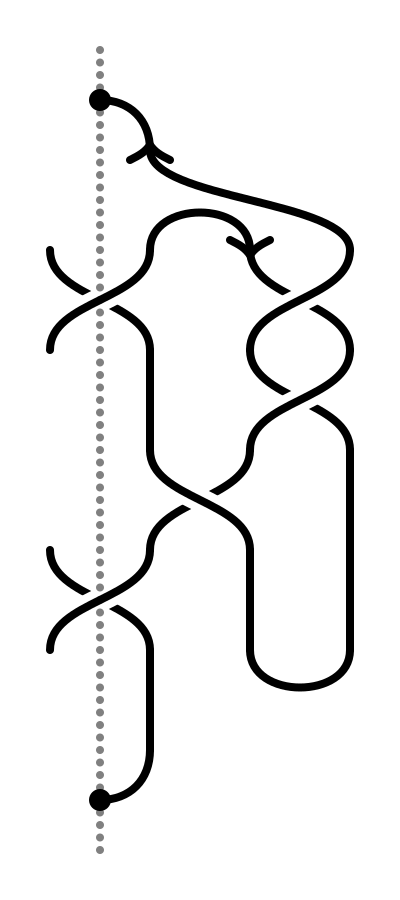

show all invariants|show all metadata
Input data and context

% s.r1.y2.y0.y2.x1.y0.u2
s.r1.y2.y0.y2.x1.y0.u2
,1
% Simplifies with options '-qs' to r0.x1.r2.y1.y1.l5.y4.y3.l5.y4.x6.y4.y5.y3.y4.y4.x2.u3.y3.y2.y0.u1.x1.x1.u0.y1.y1.y1.y1.y1.y1.y1.y1.y1.y1
Bar-Natan multicurve \(\mathrm{\widetilde{BN}}(T)\)
options -c2-qs
(diagram)
(metadata)
% file 'examples/words/w99d8293d8c6e/cxBNr-c2-qs', generated by kht++ 0.1 on Mon Nov 16 17:40:27 2026 UTC
1) h^10 q^36 δ^ 8 ⬮~~S~>⬯—>⬯~>⬯—>⬯~>⬮—>⬮<~⬯<—⬯<~⬯<—⬯<~⬮<—
2) h^ 6 q^30 δ^ 9 ⬮~~S~>⬯—>⬯~>⬯—>⬯~>⬮—>⬮<~⬯<—⬯<~⬯<—⬯<~⬮<—
3) h^ 0 q^22 δ^11 ⬮~~S~>⬯—>⬯~>⬯—>⬯~>⬮<—⬮~>⬯—>⬯~>⬯—>⬯~>⬮<—⬮~>⬯—>⬯~>⬯—>⬯~>⬮<—⬮~>⬯—>⬯~>⬯—>⬯
Khovanov multicurve \(\mathrm{\widetilde{Kh}}(T)\)
options -c2-qs
(diagram)
(metadata)
% file 'examples/words/w99d8293d8c6e/cxKhr-c2-qs', generated by kht++ 0.1 on Mon Nov 16 17:40:27 2026 UTC
1) h^11 q^39 δ^17/2 ⬮~~S~>⬯—>⬯~>⬯—>⬯~>⬯<—⬯<~⬯<—⬯<~⬮<— r(-4) q^216/5 δ|^17/2
2) h^ 9 q^35 δ^17/2 ⬮~~S~>⬯—>⬯~>⬯—>⬯~>⬮—>⬮<~⬯<—⬯<~⬯<—⬯<~⬮<— s4(∞) q^40 δ_^8
3) h^10 q^37 δ^17/2 ⬮~~S~>⬯—>⬯~>⬯—>⬯~>⬮—>⬮<~⬯<—⬯<~⬯<—⬯<~⬮<— s4(∞) q^42 δ_^8
4) h^ 5 q^29 δ^19/2 ⬮~~S~>⬯—>⬯~>⬯—>⬯~>⬮—>⬮<~⬯<—⬯<~⬯<—⬯<~⬮<— s4(∞) q^34 δ_^9
5) h^ 6 q^31 δ^19/2 ⬮~~S~>⬯—>⬯~>⬯—>⬯~>⬮—>⬮<~⬯<—⬯<~⬯<—⬯<~⬮<— s4(∞) q^36 δ_^9
6) h^ 7 q^33 δ^19/2 ⬮~~S~>⬯—>⬯~>⬯—>⬯~>⬮—>⬮<~⬯<—⬯<~⬯<—⬯<~⬮<— s4(∞) q^38 δ_^9
7) h^ 3 q^27 δ^21/2 ⬮~~S~>⬯—>⬯~>⬯—>⬯~>⬮—>⬮<~⬯<—⬯<~⬯<—⬯<~⬮<— s4(∞) q^32 δ_^10
8) h^-1 q^21 δ^23/2 ⬮~~S~>⬯—>⬯~>⬯—>⬯~>⬮—>⬮<~⬯<—⬯<~⬯<—⬯<~⬮<— s4(∞) q^26 δ_^11